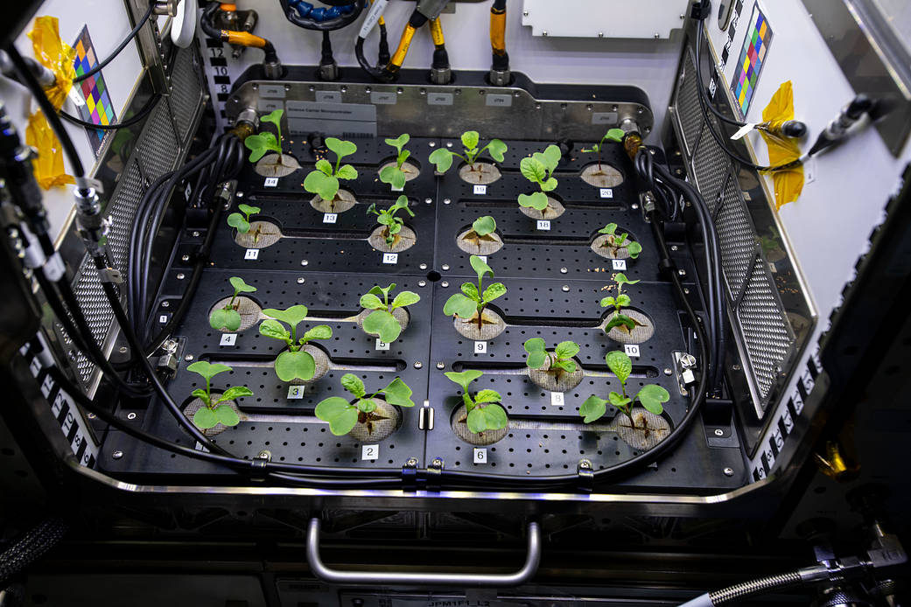

<!DOCTYPE html>
<html lang="cs">
  <head>
    <!-- Required meta tags -->
    <meta charset="utf-8" />
    <meta name="viewport" content="width=device-width, initial-scale=1" />

    <!-- Bootstrap CSS -->
    <link
      href="https://cdn.jsdelivr.net/npm/bootstrap@5.0.0-beta1/dist/css/bootstrap.min.css"
      rel="stylesheet"
      integrity="sha384-giJF6kkoqNQ00vy+HMDP7azOuL0xtbfIcaT9wjKHr8RbDVddVHyTfAAsrekwKmP1"
      crossorigin="anonymous"
    />
    <!-- pro fonty -->
    <link rel="preconnect" href="https://fonts.gstatic.com" />
    <link
      href="https://fonts.googleapis.com/css2?family=Open+Sans&display=swap"
      rel="stylesheet"
    />
    <link rel="preconnect" href="https://fonts.gstatic.com" />
    <link
      href="https://fonts.googleapis.com/css2?family=Open+Sans&family=Oxygen+Mono&display=swap"
      rel="stylesheet"
    />
    <!-- Moje pro úpravy -->
    <link rel="stylesheet" href="../styles/my-style.css" />
    <title>Půda</title>
  </head>
  <body>
    <div class="allbutfooter">
    <nav
      class="navbar navbar-expand-sm navbar-dark bg-purp navfont container-fluid"
    >
      <div class="container-fluid">
        <button
          class="navbar-toggler dropdown-toggle"
          type="button"
          data-bs-toggle="collapse"
          data-bs-target="#navbarNavDarkDropdown"
          aria-controls="navbarNavDarkDropdown"
          aria-expanded="false"
          aria-label="Toggle navigation"
        >
          <span class="navbar-toggler-icon"></span>
        </button>
        <div class="collapse navbar-collapse" id="navbarNavDarkDropdown">
          <ul class="navbar-nav">
            <li class="nav-item dropdown">
              <a
                class="nav-link dropdown-toggle"
                href="#"
                id="navbarDarkDropdownMenuLink"
                role="button"
                data-bs-toggle="dropdown"
                aria-expanded="false"
              >
                <svg
                  xmlns="http://www.w3.org/2000/svg"
                  width="32"
                  height="32"
                  fill="currentColor"
                  class="bi bi-list"
                  viewBox="0 0 16 16"
                >
                  <path
                    fill-rule="evenodd"
                    d="M2.5 11.5A.5.5 0 0 1 3 11h10a.5.5 0 0 1 0 1H3a.5.5 0 0 1-.5-.5zm0-4A.5.5 0 0 1 3 7h10a.5.5 0 0 1 0 1H3a.5.5 0 0 1-.5-.5zm0-4A.5.5 0 0 1 3 3h10a.5.5 0 0 1 0 1H3a.5.5 0 0 1-.5-.5z"
                  />
                </svg>
              </a>
              <ul
                class="dropdown-menu bg-purp dropdown-menu-dark"
                aria-labelledby="navbarDarkDropdownMenuLink"
              >
                <li><a class="dropdown-item" href="../index.html">Domů</a></li>
                <li>
                  <a class="dropdown-item" href="../history.html">Historie</a>
                </li>
                <li><a class="dropdown-item" href="../future.html">Budoucnost</a></li>
                <li>
                  <a class="dropdown-item" href="../why.html">Proč?</a>
                </li>
                <li>
                    <a class="dropdown-item" href="../sources.html">Zdroje</a>
                  </li>
                <li>
                  <a class="dropdown-item" href="../about.html">O nás</a>
                </li>
              </ul>
            </li>
          </ul>
          <a class="navbar-brand nameofweb" href="./index.html"
            >Rostliny ve vesmíru</a
          >
        </div>
      </div>
    </nav>

    <script
      src="https://cdn.jsdelivr.net/npm/bootstrap@5.0.0-beta1/dist/js/bootstrap.bundle.min.js"
      integrity="sha384-ygbV9kiqUc6oa4msXn9868pTtWMgiQaeYH7/t7LECLbyPA2x65Kgf80OJFdroafW"
      crossorigin="anonymous"
    ></script>
    <div class="container clearfix">
      <h2 style="padding-top: 15px; font-size: 40px;">Půda</h3>
          <div class="txtxt">
            <div style="text-align: center;">
            
            <p style="font-size: 12px;">Rostliny ředkvičky rostoucí v modulu Columbus na ISS. <i>Zdroj: https://www.nasa.gov/image-feature/radish-plants-growing-on-the-space-station</i></p>
          </div>
          <a href="../index.html" class="goback"><svg xmlns="http://www.w3.org/2000/svg" width="16" height="16" fill="currentColor" class="bi bi-arrow-left" viewBox="0 0 16 16">
            <path fill-rule="evenodd" d="M15 8a.5.5 0 0 0-.5-.5H2.707l3.147-3.146a.5.5 0 1 0-.708-.708l-4 4a.5.5 0 0 0 0 .708l4 4a.5.5 0 0 0 .708-.708L2.707 8.5H14.5A.5.5 0 0 0 15 8z"/>
          </svg>zpět</a>
          </div>
        </div>
      </div>
    <footer class="bg-purp foooter container-fluid">Vytvořily: Markéta Zelenková, Irena Nguyen, Alicia Rubio</footer>
  </body>
</html>
